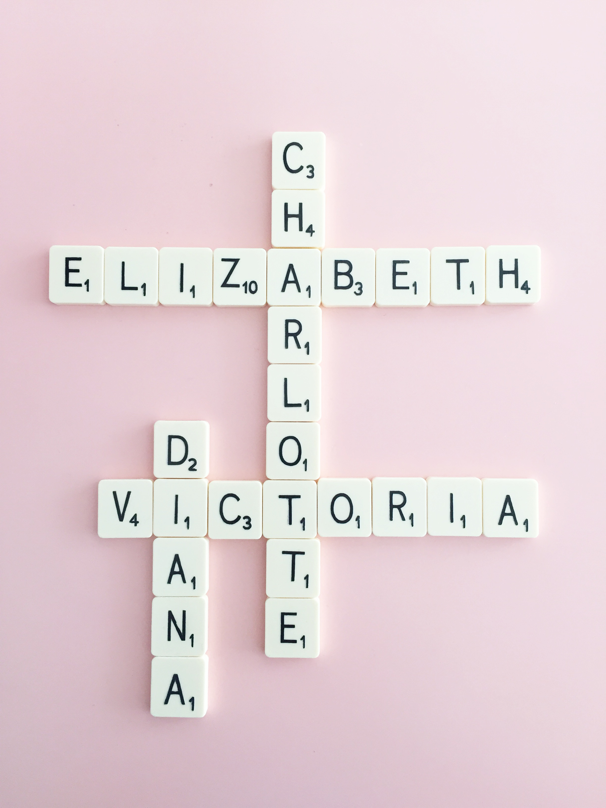
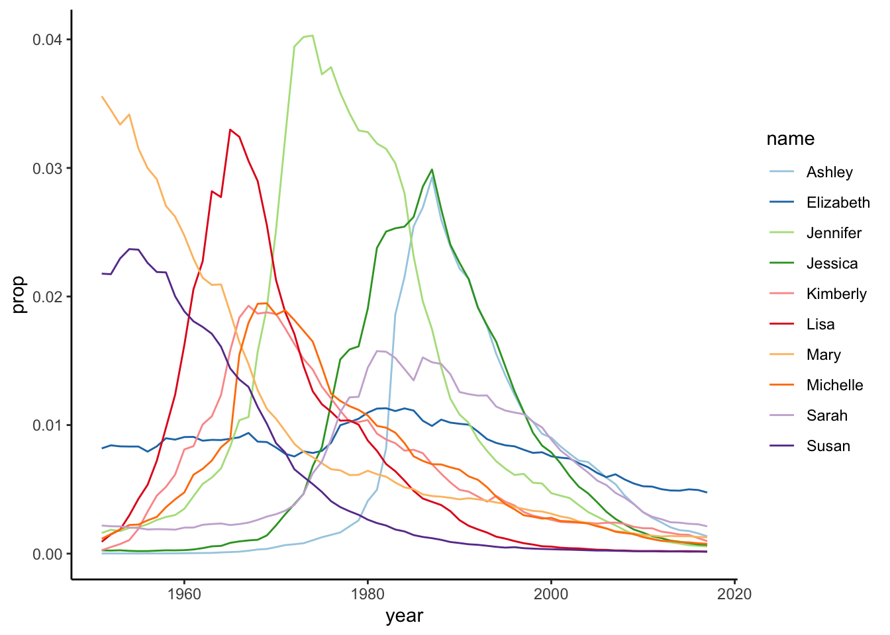
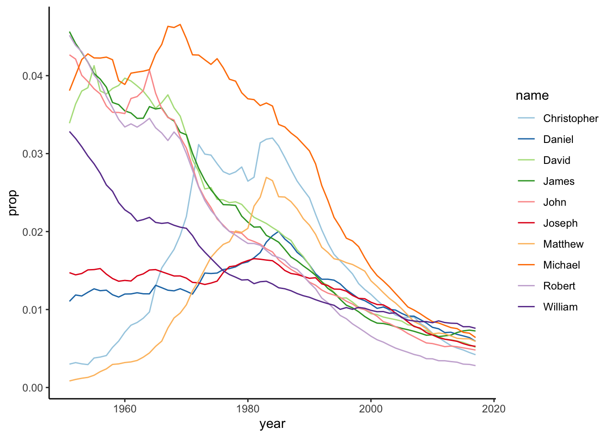

library(babynames)
library(knitr)
library(dplyr)
library(ggplot2)analysis

In this project we aim to visualize the trends of the most frequently used babynames from 1880 to 2017 in the United States. We do this by:
Understanding the different columns of the data set
Find the top 10 most frequently used baby names in the data for:
girls
boys
Plot the yearly trend of the top 10 baby names

We load the required libraries
These are the most common names
head(babynames) |> kable()| year | sex | name | n | prop |
|---|---|---|---|---|
| 1880 | F | Mary | 7065 | 0.0723836 |
| 1880 | F | Anna | 2604 | 0.0266790 |
| 1880 | F | Emma | 2003 | 0.0205215 |
| 1880 | F | Elizabeth | 1939 | 0.0198658 |
| 1880 | F | Minnie | 1746 | 0.0178884 |
| 1880 | F | Margaret | 1578 | 0.0161672 |
These are two functions provided by the tutorial instructor (click on ‘Code’ to see them).
Code
get_most_frequent <- function(babynames, select_sex, from = 1950) {
most_freq <- babynames |>
filter(sex == select_sex, year > from) |>
group_by(name) |>
summarise(average = mean(prop)) |>
arrange(desc(average))
return(list(
babynames = babynames,
most_frequent = most_freq,
sex = select_sex,
from = from))
}
plot_top <- function(x, top = 10) {
topx <- x$most_frequent$name[1:top]
p <- x$babynames |>
filter(name %in% topx, sex == x$sex, year > x$from) |>
ggplot(aes(x = year, y = prop, color = name)) +
geom_line() +
scale_color_brewer(palette = "Paired") +
theme_classic()
return(p)
}get_most_frequent(babynames, select_sex = "F") |>
plot_top()
In Figure 1 you can see that there has been a peak in popularity for ‘Lisa’, ‘Jennifer’ and ‘Jessica’. Interesting! Let’s have a look at the boys names:
get_most_frequent(babynames, select_sex = "M") |>
plot_top()
Figure 2 shows that names that were popular before 1990 are relatively infrequent after 2000.